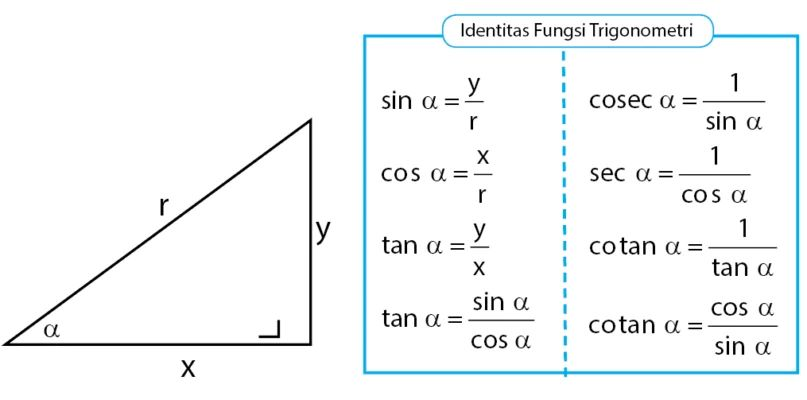

|
Kimia PPKN Biologi Matematika Agama Bahasa Indonesia |
Trigonometri

Trigonometri (dari bahasa Yunani trigonon = "tiga sudut" dan metron = "mengukur")[1] adalah sebuah cabang matematika yang mempelajari hubungan yang meliputi panjang dan sudut segitiga. Bidang ini muncul di masa Helenistik pada abad ke-3 SM dari penggunaan geometri untuk mempelajari astronomi. Trigonometri mudah dikaitkan dalam bidang segitiga siku-siku (dengan hasil jumlah besar kedua sudut lancip sama dengan besar sudut siku-siku). Peranan untuk selain segitiga siku-siku juga ada. Sejak segitiga yang bukan siku-siku dapat dibagi menjadi dua segitiga siku-siku, banyak masalah yang dapat diatasi dengan penghitungan segitiga siku-siku. Karena itu, sebagian besar penggunaan trigonometri berhubungan dengan segitiga siku-siku. Satu pengecualian untuk spherical trigonometry, yakni pelajaran trigonometri dalam sphere atau permukaan dari curvature relatif positif dalam elips geometri (bagian yang berperan dalam menemukan astronomi dan navigasi). Trigonometri dalam curvature negatif merupakan bagian dari geometri hiperbola. Konsep Jika salah satu satu sudut 90 derajat dan sudut lainnya diketahui, dengan demikian sudut ketiga dapat ditemukan, karena tiga sudut segitiga bila dijumlahkan menjadi 180 derajat. Karena itu dua sudut (yang kurang dari 90 derajat) bila dijumlahkan menjadi 90 derajat: ini sudut komplementer. Kegunaan Ada banyak aplikasi trigonometri. Terutama adalah teknik triangulasi yang digunakan dalam astronomi untuk menghitung jarak ke bintang-bintang terdekat, dalam geografi untuk menghitung antara titik tertentu, dan dalam sistem navigasi satelit. Bidang lainnya yang menggunakan trigonometri termasuk astronomi (dan termasuk navigasi, di laut, udara, dan angkasa), teori musik, akustik, optik, analisis pasar finansial, elektronik, teori probabilitas, statistika, biologi, pencitraan medis/medical imaging (CAT scan dan ultrasound), farmasi, kimia, teori angka (dan termasuk kriptologi), seismologi, meteorologi, oseanografi, berbagai cabang dalam ilmu fisika, survei darat dan geodesi, arsitektur, fonetika, ekonomi, teknik listrik, teknik mekanik, teknik sipil, grafik komputer, kartografi, kristalografi. Pada abad ke-3 Masehi, astronom pertama kali mencatat panjang sisi-sisi dan sudut-sudut dari segitiga siku-siku antara masing-masing sisi yang memiliki hubungan: ini dia, jika setidaknya salah satu panjang sisi dan salah satu nilai sudut diketahui, lalu semua sudut dan panjang dapat ditentukan secara algoritme. Penghitungan ini didefiniskan menjadi fungsi trigonometrik dan saat ini menjadi dalam bagian matematika murni dan terapan: contohnya untuk menganalisis metode dasar seperti transformasi fourier atau gelombang persamaan, menggunakan fungsi trigonometrik untuk memahami fenomena hal yang berhubungan dengan lingkaran melalui banyak penggunaan dibidang yang berbeda seperti fisika, teknik mesin dan listrik, musik dan akustik, astronomi, dan biologi. Trigonometri juga memiliki peranan dalam menemukan surveying. Fungsi trigonometri dapat didefinisikan melalui segitiga siku-siku, dengan : ABC adalah segitiga siku-siku, a dan b adalah sisi-sisi segitiga beserta c adalah hipotenusa atau sisi miring segitiga. Misalkan A adalah sudut yang diketahui. Fungsi sin didefinisikan sebagai rasio sisi depan dengan hipotenusa. Fungsi cos didefinisikan sebagai rasio sisi samping dengan hipotenusa. Fungsi tan didefinisikan sebagai rasio sisi depan dengan sisi samping. Fungsi tan juga didefinisikan sebagai rasio fungsi sinus dengan kosinus |